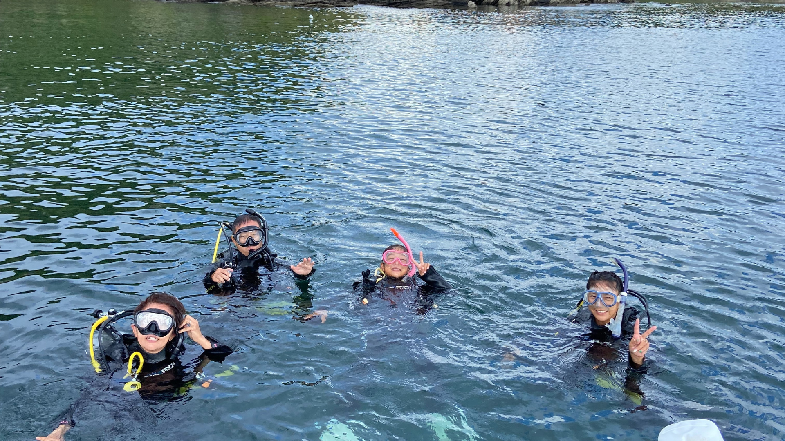
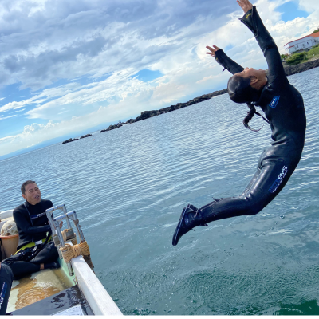
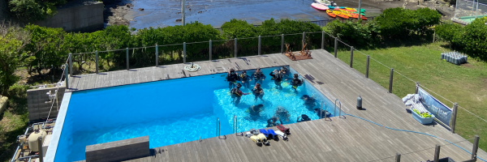
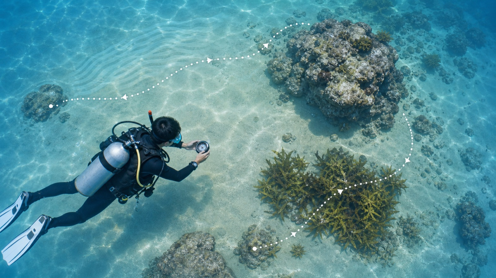
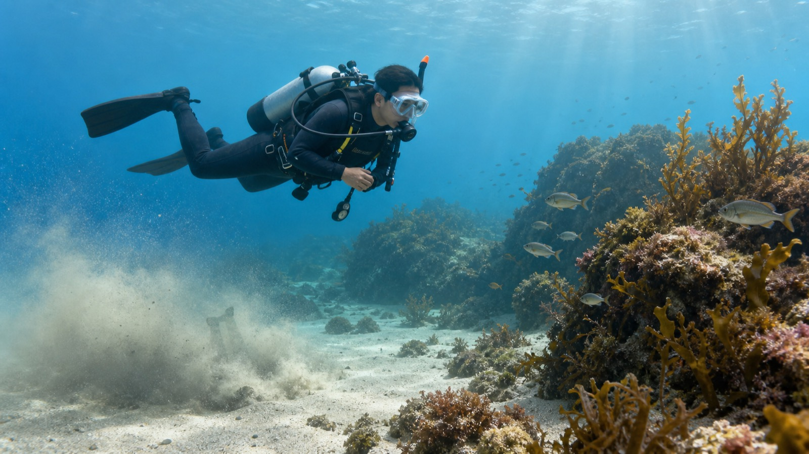

このページで確認すること
ディープ
ナビゲーション
PPB
魚の見分け方
ボート
ドライスーツ
ナチュラリスト
AOW講習 事前学習ガイド
ディープダイビングとナビゲーションを軸に、選択科目で自分のダイビングの幅を広げます。細かい流れは当日インストラクターが案内するので、ここでは「何を見るか」「何を考えるか」をつかんでおきましょう。
Course Outline
OWDで身につけた基本を使いながら、深度、方向感覚、浮力、観察力、ボートやドライスーツなどの経験値を広げていきます。
講習は2日間で合計5ダイブ。必須科目はディープダイビングとアンダーウォーターナビゲーションです。残り3ダイブは、基本的にPPB、魚の見分け方、ボートダイビング、ドライスーツダイビング、ナチュラリストから選びます。

Required Dives
どちらも「落ち着いて計画し、バディと確認しながら潜る」ための科目です。上手さより、確認の丁寧さを大切にします。

予習ポイント
深い場所に行くこと自体が目的ではなく、計画通りに潜って戻る判断力を身につけるのが目的です。

予習ポイント
迷わない人になるというより、今どこにいるかを考え続けられる人になる練習です。
Adventure Dives
海況、季節、経験、目的に合わせて決めます。希望がある場合は事前に相談してください。
呼吸、姿勢、ウエイト量、フィンワークを整えて、砂を巻き上げずに止まる・進む練習です。
見ておくこと
名前を丸暗記するより、形、泳ぎ方、すみか、群れ方から仲間を見分ける練習です。
見ておくこと
ボート上での動き、エントリー、潜降、浮上、エキジットを落ち着いて行う練習です。
見ておくこと
スーツ内の空気を管理しながら、寒い時期でも快適に潜るための基礎を確認します。
見ておくこと
水中生物の関係や環境を観察し、海の中を傷つけずに楽しむ視点を育てます。
見ておくこと
基本は上の5科目から3つ。海況や参加者の経験により、最も安全で学びやすい順番に調整します。
事前に考えること
Learning Guide
ここは「手順を覚える」よりも、なぜそのダイブを学ぶのか、どんなリスクがあり、どう考えると安全に楽しめるかを整理する場所です。

ディープでは、同じ海でも浅場とは条件が変わります。深くなるほど空気消費、浮力変化、無減圧時間、体への負荷が変わるため、ひとつの数字だけで判断しないことが大切です。
深い場所へ行くための講習ではなく、深度が変わったときに判断を崩さないための講習です。
18mより深い世界では、色の見え方、残圧の減り方、浮力、無減圧時間の感覚が変わります。AOWではその変化を実際に確認し、深いポイントでも落ち着いて計画通りに潜る考え方を身につけます。
考えておくこと：深い場所で「あと少し見たい」と思ったとき、何を確認してから判断するべきでしょうか。

コンパスは大切ですが、コンパスだけを見続けると周囲やバディを見落とします。砂紋、岩、海藻、光、流れ、深度変化を一緒に読むことで、水中の地図が少しずつ頭にできます。
水中で自分の位置を考え続け、チームで安全に戻るための基礎です。
水中では視界が限られ、陸上より方向感覚が失われやすくなります。ナビゲーションを学ぶと、ガイドにただ付いていくのではなく、今どこにいて、どの方向に戻るのかを自分でも考えられます。
考えておくこと：コンパスの方角が合っていても「何か違う」と感じたら、周囲のどんな情報を見直しますか。

浮力が安定すると、疲れにくく、残圧にも余裕が出て、砂を巻き上げず、生き物にも近づきすぎません。魚の見分け方やナチュラリストも、まずは落ち着いた姿勢で観察することから始まります。
上手に見えるためではなく、楽に、安全に、海を傷つけずに潜るための基礎です。
中性浮力が安定すると、余計な動きが減り、疲れにくく、空気の消費も落ち着きます。水底を壊さず、生き物を驚かせず、写真や観察もしやすくなります。
考えておくこと：浮きそうになった瞬間、すぐに排気する前に何を確認すると落ち着けるでしょうか。
名前を覚える講習ではなく、観察の切り口を増やして海の中をもっと面白く見る講習です。
魚を「知っている名前」だけで見ると、分からない魚は全部同じに見えます。体型、口、ヒレ、泳ぎ方、すみかを観察すると、名前が分からなくても仲間や暮らし方を推測できます。
考えておくこと：名前が分からない魚を見たとき、あとで調べるために何を覚えておくとよいでしょうか。
船から潜る楽しさと、船上・水面・浮上後の安全管理を学ぶ講習です。
ボートを使うと、ビーチから届きにくいポイントに行けます。その分、船上の動線、エントリー、集合、浮上場所、エキジットなど、水中以外の判断も大切になります。
考えておくこと：浮上した場所が船から少し離れていたら、まず何をして自分の位置を知らせますか。
寒い季節も快適に潜るために、スーツ内の空気と体温管理を学びます。
ドライスーツは体を濡らしにくく保温性があります。冬や春の海を楽しめる一方で、スーツ内の空気が浮力に影響するため、ウェットスーツとは違う考え方が必要です。
考えておくこと：ドライスーツで急に足が軽く感じたら、慌てて泳ぐ前に何を整えるべきでしょうか。
海の生き物と環境のつながりを見て、ダイバーとしての距離感を学ぶ講習です。
海の中は、魚、海藻、砂地、岩、甲殻類、貝、季節の変化がつながっています。ナチュラリストでは、名前よりも「どこにいて、何をしていて、なぜそこにいるのか」を観察します。
考えておくこと：近づいた瞬間に生き物の動きが変わったら、それは何のサインでしょうか。
Study Notes
細かな数値や手順は当日も確認します。ここでは、各ダイブで意識する観点を整理します。
深度が増すと同じ呼吸でもタンクの空気は早く減ります。残圧は「まだある」ではなく、「戻る分、浮上する分、予備を残せるか」で見ます。
浮上はゆっくり、こまめに確認。安全停止中は深度を保ち、バディと周囲を見ます。浮上後もボートや岸まで気を抜きません。
エントリー前、潜降前、深度変更前、浮上前に、バディの位置と様子を見ます。AOWでは「自分ができる」から「一緒に安全に潜れる」へ視野を広げます。
水中では、深度、時間、残圧、生物、地形、流れ、透明度など、見るものが増えます。全部を完璧に覚えるより、気づいたことをログに残す習慣が大切です。
Knowledge Check
満点を取るためのテストではありません。迷ったところを当日質問できるようにするための確認です。
Ready Check
体調と忘れ物の確認が、いちばん確実な安全対策です。無理がある場合は早めに相談してください。